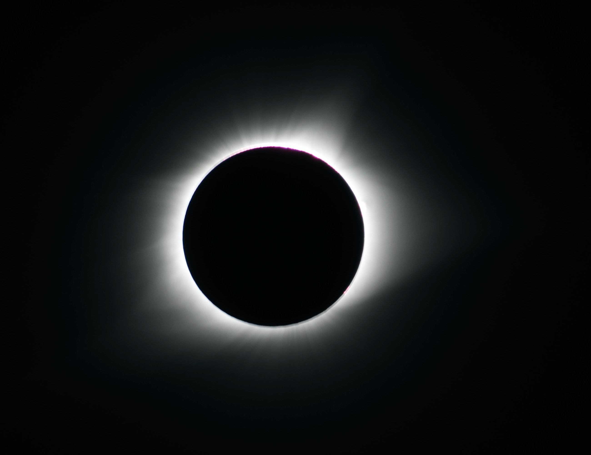

Solar Eclipse of October 25, 2022
What is it?
The Solar Eclipse of October 25, 2022 is a partial solar eclipse that will be visible from Europe, the Urals and Western Siberia, the Middle East and Western Asia, and from the north-east of Africa. A partial solar eclipse is when the Moon blocks only part of the Sun's disk, contrary to a total solar eclipse occurs when the Moon completely covers the Sun's disk
What is the best spot?
As we wrote previously, the eclipse will be visible from a lot of places, specially in Europe and Asia, but the best spot to see clearly the eclipse The maximal phase of the partial eclipse will be recorded on West Siberian Plain in Russia near Nizhnevartovsk.
Are there any precautions to take?
Sure! To observe a solar eclipse, it is imperatively to wear special glasses. Watching a solar eclipse with the naked eye is very dangerous for your eyes, because when the Sun suddenly reappears, injury to the retina could occur.